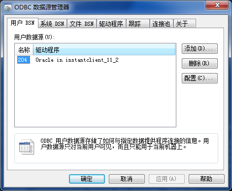
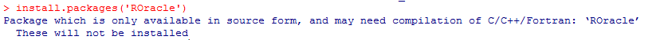

实际上学习R语言,主要是为了研究时间序列,相比Python的pandas,R中的包要强悍很多。
而使用R连接Oracle数据库的需求,实际是1个同事打算使用R语言对数据库直接进行操作,而不需要每次都导出数据再进行操作。而实际上我们公司是使用Python进行数据分析的。
而在R中,要实现与Oracle数据库的操作,主要有3个包可以使用:
- RODBC
- RJDBC
- ROracle
RODBC惹的祸
而最开始他选择的是RODBC,主要是因为在Windows下进行操作。结果卡在了如下的异常中:
1: In odbcDriverConnect("DSN=group;UID=fwy;PWD=fwy") :
[RODBC] ERROR: state IM014, code 0, message [Microsoft][ODBC 驱动程序管理器] 未发现数据源名称并且未指定默认驱动程序
2: In odbcDriverConnect("DSN=group;UID=fwy;PWD=fwy") :
ODBC connection failed
可以很明显的看到,是没有安装对应的ODBC驱动。于是从oracle的官方页面下载了如下2个文件:
- instantclient-basic-windows.x64
- instantclient-odbc-windows.x64
这里我在Windows7上使用的版本是11.2.0.3。将上述2个文件解压后合并在1个文件夹后,通过管理员身份运行文件夹下的odbc_install.exe文件即可安装。
之后通过控制面板->管理工具->数据源(ODBC)中的相关设置即可成功连接。结果在他的Windows10系统中上述操作无法设置成功。
其配置页面类似如下:

ODBC设置成功后就可以通过如下的方式操作Oracle数据库了:
library("RODBC")
db <- odbcConnect(dsn="mesprd", uid="mesprd", pwd="wip24ux")
data <- sqlQuery(db, "SELECT SYSDATE from DUAL")需要注意的是,在这里第1个参数dsn是我们设置ODBC时对应的名称,如果使用IP地址的方式是无法连接成功的,这是需要注意的。
还是ROracle比较靠谱
既然RODBC行不通,那么我们就来实践下RJDBC吧,结果把我搞晕了,实在太复杂了,超出了我头脑的容纳范围。没办法,只能再换种方式了,于是只能试下ROracle了。
我进行了如下的操作:
install.packages('ROracle')
如果直接安装会出现类似如下的页面:

结果安装的过程中提醒我没有找到OCI的库。那么需要安装如下3个包:
- instantclient-basic-windows.x64
- instantclient-sqlplus-windows.x64
- instantclient-sdk-windows.x64
在这里,我使用的版本还是上面的11.2.0.3。安装完成后,还需要设置OCI_LIB64和PATH环境变量为上述解压后的目录地址,以便可以找到对应的文件。
需要注意的是,ROracle的安装在Linux上相对更为简单,在Windows上我们需要手动进行源码的安装。很不幸运的是,其版本1.3.1在Windows7系统上式无法编译通过的,最后选择了版本1.2则很顺利的通过了。其下载地址可以点击。
下载完成后,我们在R的环境下运行:
setwd('下载包的目录')
install.packages('ROracle_1.2-1.zip',repos=NULL)
#install.packages('ROracle',type='source')当然你也可以手动执行如下的操作:
R CMD INSTALL ROracle-1.2-1.zip
这样就完成了包的安装,最后通过类似如下的方式进行操作
library(ROracle)
drv <- dbDriver("Oracle")
con <- dbConnect(drv, "mesprd", "wip24ux")最后关于这3个库的性能问题,可以参考。其执行速度关系为ROracle>RODBC>RJDBC。
参考文章:
https://docs.oracle.com/en/database/oracle/oracle-database/12.2/adfns/odbc-driver.html#GUID-CD847FD4-7CF9-40E1-B0C0-6B9EB372E122
https://cran.r-project.org/web/packages/ROracle/ROracle.pdf
https://stackoverflow.com/questions/35288695/connect-r-to-oracle-database-server-roracle-rodbc
https://stackoverflow.com/questions/18046324/how-to-install-roracle-package-on-windows-7
https://stackoverflow.com/questions/1474081/how-do-i-install-an-r-package-from-source